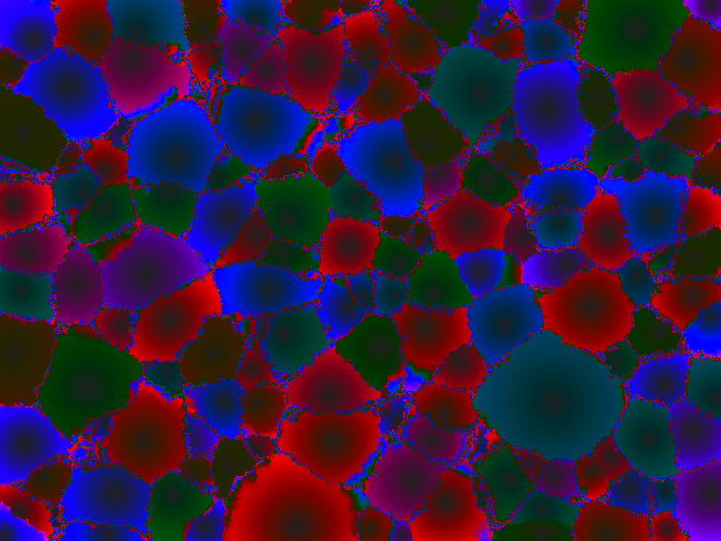
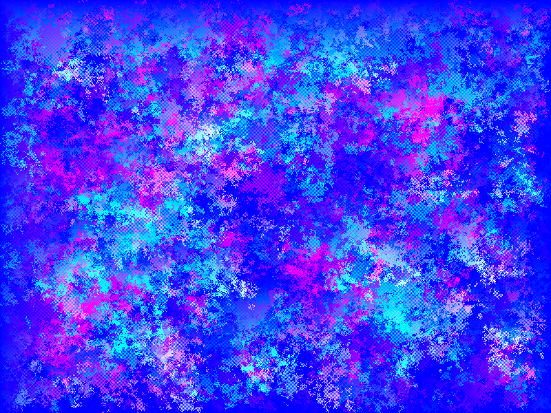

graffito：当细胞自动机拒绝意义之后
graffito: What Remains When Cellular Automata Refuse Meaning

哥本哈根程序员 Niels G. W. Serup 用一种叫 Futhark 的数据并行函数式编程语言写了一个细胞自动机框架，名字叫 graffito。这个框架的全部目的，用他自己在 FOSDEM 2026 的演讲标题来说，就是制造"漂亮的、没有意义的细胞自动机"。Conway 的生命游戏模拟生命，Wolfram 的规则模拟计算，而 graffito 里的每一个 stencil——steal、coralreef、routefinder、collatz——都不模拟任何东西。它们只是一组局部规则，在 GPU 上并行跑起来之后，涌现出作者自己也没有预设的全局图案。
这里面有一个精确的凿构操作。细胞自动机这个领域在过去六十年里形成了一套已构（construct）：它是科学工具，是用来模拟现实的。生命游戏模拟生死，Langton 蚁模拟涌现行为，格子气体方法模拟流体力学。这些都是过去的凿构循环留下的沉积物——曾经是余项的东西被消化、被命名，变成了学科知识。Serup 做的事情是从这个已构中凿掉"模拟现实"这个目的。凿掉之后剩下的是什么？是纯粹的涌现本身——局部规则产生全局图案，但这个图案不指向任何现实对象。这个涌现就是余项。

更深层的余项在工具选择里。Futhark 是哥本哈根大学 DIKU 的编译器研究项目，一个为 GPU 并行计算设计的纯函数式语言。没有人用 Futhark 做艺术——这不是它被设计出来的目的。Serup 用它来写细胞自动机，是因为 Futhark 的数据并行语义恰好与 stencil 计算完美契合：每个细胞独立地根据邻居状态更新自己，这就是天然的 map 操作。但这种"恰好"本身就是余项——编译器研究和视觉涌现之间的意外亲和力，不在任何人的计划里。stencil 的代码本身也在不断生成意外：routefinder 原本是要做路径可视化的，结果变成了"造山"。consistencyfier 被作者自己标注为"还不确定是什么"。框架鼓励任何人提交新的 stencil——"我基本什么都接受"——这意味着余项的生产是开放的、持续的。
graffito 坐在一个多重命名缺口里：它不是生成艺术（没有任何艺术市场或展览存在），不是科学模拟（明确拒绝模拟现实），不是 demoscene（没有尺寸限制或竞赛目标），也不是函数式编程教学示例（虽然代码极其优雅）。它是一个三年来在 BornHack 和 FOSDEM 上做过演讲、在 GitHub 上缓慢生长的项目，属于编译器研究、GPU 计算、创意编码、视觉涌现之间的缝隙。没有一个领域能完整命名它。这正是余项之美的特征：逻辑还在生长，名字还没有到。现在看到它，比以后看到它更重要——因为以后它也许会被某个领域消化掉，变成已构。
github.com/nqpz/graffito ↗Niels G. W. Serup, a Copenhagen-based programmer with a Master's in computer science from DIKU (University of Copenhagen), has spent three years building a cellular automaton framework called graffito. It is written in Futhark, a data-parallel functional programming language designed for GPU computation. The framework's entire purpose, as stated in Serup's FOSDEM 2026 talk title, is to produce "pretty cellular automata devoid of meaning." Conway's Game of Life simulates life. Wolfram's rules simulate computation. Each stencil in graffito — steal, coralreef, routefinder, collatz — simulates nothing. They are local rules that, when run in parallel on a GPU, produce global visual patterns that the author himself did not design.
There is a precise chisel-construct operation here. Cellular automata as a field has, over sixty years, developed a thick layer of construct: it is a scientific tool, meant to simulate reality. The Game of Life simulates birth and death. Langton's Ant models emergent behavior. Lattice gas methods model fluid dynamics. These are sediments of past chisel-construct cycles — what was once remainder got digested, named, and became disciplinary knowledge. What Serup does is chisel away the purpose of "simulating reality" from this construct. What is left after the chisel? Pure emergence itself — local rules producing global patterns that point to no real-world referent. That emergence is the remainder.
A deeper remainder lives in the tooling choice. Futhark is a compiler research project from DIKU — a purely functional language built for GPU parallel computation. Nobody uses Futhark for art; that is not what it was designed for. Serup uses it because Futhark's data-parallel semantics happen to align perfectly with stencil computation: each cell independently updates based on its neighbors, which is a natural map operation. But this "happening to align" is itself a remainder — the accidental affinity between compiler research and visual emergence, part of no one's plan. The stencil code itself continually generates surprise: routefinder was meant to visualize path-finding but "ended up being more about building mountains." The consistencyfier is labeled "Not sure yet." The framework invites anyone to submit new stencils — "I'll accept most things!" — meaning remainder production is open and ongoing.
graffito sits in a multiple naming gap: it is not generative art (no market, no exhibitions, no gallery presence), not scientific simulation (it explicitly refuses to model reality), not demoscene (no size constraints or competition targets), not a functional programming tutorial (though the code is remarkably elegant). It is a project that has been quietly growing on GitHub for three years, with talks at BornHack 2024 and FOSDEM 2026, belonging to the cracks between compiler research, GPU computing, creative coding, and visual emergence. No single field can fully name it. This is precisely what the beauty of the remainder looks like: the logic is still growing, the name has not arrived. Seeing it now matters more than seeing it later — because later, some field may digest it into construct.
github.com/nqpz/graffito ↗